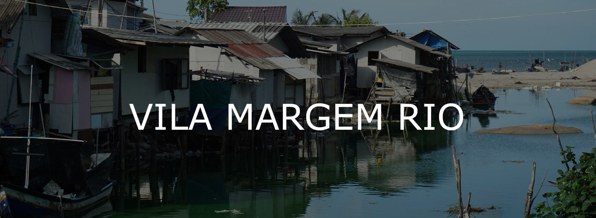

A Vila Margem Rio é uma comunidade, localizada no estado de São Paulo onde a solidariedade se entrelaça com a resiliência. No entanto, a falta de acesso a serviços básicos, como educação de qualidade, assistência médica adequada e oportunidades de emprego, tem sido um obstáculo persistente para os moradores. A ausência de infraestrutura adequada e o isolamento geográfico tornam desafiador para os habitantes locais prosperarem e melhorarem suas condições de vida.
Vila Margem Rio na Pandemia da Covid-19
A chegada da pandemia de COVID-19 lançou a Vila Margem Rio em uma crise sem precedentes. As limitações impostas pelo distanciamento social interromperam os ritmos cotidianos da comunidade. Escolas fecharam suas portas, privando as crianças não apenas da educação formal, mas também do ambiente social crucial para o desenvolvimento saudável. As pequenas empresas locais, já vulneráveis, foram duramente atingidas pelo fechamento temporário, deixando muitos residentes desempregados e sem meios de sustento. A incerteza pairava no ar, criando um clima de ansiedade e medo entre os moradores.
Além das preocupações com a saúde física, a pandemia teve um impacto significativo na saúde mental da comunidade. O aumento do estresse, a perda de entes queridos para o vírus e a sensação de isolamento exacerbaram problemas como ansiedade e depressão. Muitos moradores, já lutando contra as dificuldades do dia a dia, viram sua resiliência testada ao limite. O apoio psicológico tornou-se uma necessidade urgente, mas o acesso a serviços de saúde mental era limitado, aprofundando ainda mais a crise.
No entanto, mesmo nas circunstâncias mais difíceis, a comunidade da Vila Margem Rio encontrou força na solidariedade. Vizinhos ajudaram uns aos outros, compartilhando recursos limitados e oferecendo apoio emocional. As organizações não-governamentais e voluntários dedicados trabalharam incansavelmente para fornecer assistência médica, alimentos e orientação emocional. A pandemia, embora tenha trazido sofrimento, também despertou um senso de unidade na comunidade, lembrando a todos da importância de se apoiarem mutuamente nos momentos mais sombrios.
Projetos de desenvolvimento estão em andamento para fortalecer a infraestrutura, melhorar o acesso à educação e expandir os serviços de saúde mental, e cada dia que passa, a Vila Margem Rio se recupera do grande rasgo que houve durante a época da pandemia da Covid-19.
A Mão Amiga em Momentos Difíceis
Em meio ao caos da pandemia, a Vila Margem Rio foi agraciada com uma mão amiga estendida pela generosidade de indivíduos, organizações e voluntários dedicados. As campanhas de arrecadação de alimentos não apenas forneceram refeições nutritivas às famílias necessitadas, mas também trouxeram um senso de comunidade, mostrando aos moradores que não estavam sozinhos em sua luta contra a fome. Estas iniciativas não apenas aliviaram a fome imediata, mas também transmitiram uma mensagem de esperança e compaixão, lembrando a todos que, mesmo em tempos difíceis, a humanidade ainda se mostra humanizada.
Os profissionais de saúde tornaram-se verdadeiros heróis na Vila Margem Rio, junto com as muitas doações e ajudas de ONGs. Médicos, enfermeiros e trabalhadores da linha de frente arriscaram suas próprias vidas para fornecer cuidados médicos vitais à comunidade. Clínicas móveis foram organizadas, levando atendimento médico até mesmo às áreas mais remotas, garantindo que aqueles que precisavam de tratamento pudessem recebê-lo. Além dos cuidados físicos, esses profissionais também ofereceram apoio emocional, ouvindo as preocupações dos moradores e compartilhando palavras de encorajamento.
Além dos aspectos básicos de sobrevivência, a comunidade também recebeu apoio em sua busca por educação e capacitação. Acesso à educação online foi facilitado, permitindo que crianças continuassem aprendendo de forma remota durante o fechamento das escolas. Além disso, programas de treinamento profissional foram implementados, fornecendo às pessoas habilidades práticas que poderiam levar a oportunidades de emprego sustentáveis. O conhecimento e a capacitação não apenas ofereceram um meio de subsistência, mas também empoderaram os moradores, mostrando-lhes que eles têm o potencial de moldar seu próprio futuro, apesar das adversidades.
O coração pulsante da ajuda à Vila Margem Rio foi o espírito incansável dos voluntários. Pessoas de todas as idades e origens se uniram, doando seu tempo e esforço para apoiar os necessitados. Suas ações altruístas não apenas forneceram assistência prática, mas também inspiraram um senso renovado de comunidade. O calor humano e a compaixão compartilhados pelos voluntários fortaleceram os laços entre os moradores, criando um ambiente de apoio onde cada indivíduo se sentia valorizado e amparado.